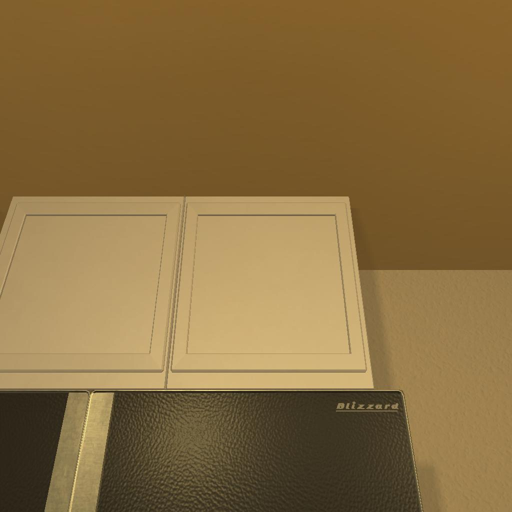

---------------------------------------------------------task: 10---------------------------------------------------------
--------------------------------------------------------------------------------------------------------------------------------------------------------------------
--------------------------------------------------------------------------------------------------------------------------------------------------------------------
Step:--------------------------------------------------------------------------10-------------------------------------------------------------------------------
----------------------------------------
VLM Prompt:
**Task**
Please perform as an embodied AI agent. Our final objective is to clean some plate and put it in countertop. Below is the plan for completing the task, the current observation, alongside historical data and admissible actions for the next step. Please determine the best action for the next step!
**Plan**
Below is a detailed step-by-step plan to complete the task.
1. Find a plate.
2. Pick up the plate.
3. Find a sink or basin.
4. Clean the plate with the sink or basin.
5. Find a countertop.
6. Place the cleaned plate on the countertop.
**Current Observation**
Displayed is an image capturing the current position of the agent.
**History Information**
Displayed are the previous observations with their corresponding actions.
Current State 1:
1. Place: Unknown location near a sink
2. Step Index in Plan: 1
3. Objects: Plate, Sink, Cabinet
4. Action: Go to cabinet 1
Current State 2:
1. Place: In front of a wall and a partial view of a cabinet
2. Step Index in Plan: 1
3. Objects: Wall, partial cabinet view, cabinet 1 (previously explored), cabinet 2
4. Action: go to cabinet 2
Current State 3:
1. Place: Kitchen
2. Step Index in Plan: 1
3. Objects: Countertop, plate, toaster
4. Action: Go to toaster 1
Current State 4:
1. Place: Countertop area
2. Step Index in Plan: 1
3. Objects: Plate
4. Action: Go to countertop 1
Current State 5:
1. Place: Countertop
2. Step Index in Plan: 1
3. Objects: Pot, Bowl, Cup, Toaster
4. Action: Go to cabinet 3
Current State 6:
1. Place: Cabinet 3
2. Step Index in Plan: 1
3. Objects: Cabinet 1, Cabinet 2, Toaster 1, Countertop 1, Cabinet 3, Cabinet 4
4. Action: Go to cabinet 4
Current State 7:
1. Place: In front of a microwave on a countertop
2. Step Index in Plan: 1
3. Objects: Cabinet 4, microwave, countertop
4. Action: Open cabinet 4
Current State 8:
1. Place: In front of a microwave on a countertop
2. Step Index in Plan: 1
3. Objects: Cabinets, Countertop, Microwave
4. Action: Go to cabinet 5
Current State 9:
1. Place: In front of the countertop with a microwave
2. Step Index in Plan: 1
3. Objects: Countertop, garbage can
4. Action: Open cabinet 5
Current State 10:
1. Place: In front of a countertop with a microwave and a garbage can.
2. Step Index in Plan: 1
3. Objects: Cabinet, Plate, Countertop, Microwave, Garbage Can
4. Action: Go to cabinet 16
**Admissible Actions**
(1): go to cabinet 1
(2): go to cabinet 2
(3): go to cabinet 3
(4): go to toaster 1
(5): go to cabinet 4
(6): go to microwave 1
(7): go to garbagecan 1
(8): go to countertop 1
(9): go to drawer 1
(10): go to cabinet 6
(11): go to cabinet 7
(12): go to drawer 2
(13): go to stoveburner 1
(14): go to stoveburner 2
(15): go to countertop 2
(16): go to cabinet 8
(17): go to cabinet 9
(18): go to cabinet 10
(19): go to drawer 3
(20): go to drawer 4
(21): go to stoveburner 3
(22): go to stoveburner 4
(23): go to cabinet 11
(24): go to cabinet 12
(25): go to cabinet 13
(26): go to cabinet 14
(27): go to sinkbasin 1
(28): go to sink 1
(29): go to cabinet 15
(30): go to fridge 1
(31): go to cabinet 17
(32): go to cabinet 18
(33): go to cabinet 19
(34): go to diningtable 1
(35): go to coffeemachine 1
(36): go to cabinet 20
(37): open cabinet 16
(38): close cabinet 16
**Analysis Guideline**
1. Analyze the **History Information** and determine our current step in the plan and our current place.
2. List all visible objects related to the task in the current observation.
3. Analyze the objects in the current observation based on the history and the requirements for the current step, and then determine if we can complete the step with the current observation.
4. Analyze and decide on the most appropriate action to take.
5. Summarize the analysis using the following format: "Analysis: [The summarization of the analysis], The Most Appropriate Action: (i which is the integer.): [Selected action]"
**Notes**
1. We must complete each step of the plan in order and cannot skip steps when the previous ones are not finished.
2. For "Go to" actions listed as "go to xxx [n]", interpret this as there are n distinct actions available: "go to xxx 1", "go to xxx 2", ..., "go to xxx n". Select one specific action from these options instead of using "go to xxx [n]".
3. If receptacles such as drawers, cabinets, and so forth are closed in the current observation, we may try to open them.
4. Pay attention to synonyms and ensure clarity in the terms used.
5. If there is no history available, we are at the first step and the current place is "Unknown".
6. The most appropriate action must be in the **Admissible Actions**, and we cannot generate a new action that is not in the **Admissible Actions**.
**Answer**
Please select the most suitable action by following the **Analysis Guideline**, keeping the above **Notes** in mind.
----------------------------------------
----------------------------------------
VLM Response:
Analysis: Based on the History Information, the current step in the plan is to find a plate, which is step 1. The current place can be inferred as in front of cabinet 16, as the last action taken was to go to cabinet 16. In the Current Observation, no objects are visible as the image is looking at the ceiling and part of cabinet doors. Therefore, we cannot complete the step with the current observation. The most appropriate action to take next would be to open cabinet 16, as it is the last place we navigated to and it hasn't been explored yet.
The Most Appropriate Action: (37): open cabinet 16
----------------------------------------
----------------------------------------
>>> Refine VLM Response and Get Pure Action: open cabinet 16
----------------------------------------
-----------------------------------------------------------------
Running time: 6.695837736129761 seconds
Total Money: 4.884619999999998
-----------------------------------------------------------------
-----------------------------------------------------------------
Summarization Prompt:
**Context**
Analysis: Based on the History Information, the current step in the plan is to find a plate, which is step 1. The current place can be inferred as in front of cabinet 16, as the last action taken was to go to cabinet 16. In the Current Observation, no objects are visible as the image is looking at the ceiling and part of cabinet doors. Therefore, we cannot complete the step with the current observation. The most appropriate action to take next would be to open cabinet 16, as it is the last place we navigated to and it hasn't been explored yet.
The Most Appropriate Action: (37): open cabinet 16
**Summary Format**
1. Place: [Specify the current location]
2. Step Index in Plan: [Dispkay the current step number in the plan before taking the current action]
3. Objects: [List the objects relevant to the task]
4. Action: [Describe the most appropriate action without the "(x)" and keep the integer of the object]
Please analyze the **Context** and summarize the analysis using the **Summary Format**.
-----------------------------------------------------------------
-----------------------------------------------------------------
Summarization Response:
1. Place: In front of cabinet 16
2. Step Index in Plan: 1
3. Objects: None visible (image looking at ceiling and cabinet doors)
4. Action: Open cabinet 16
-----------------------------------------------------------------
-----------------------------------------------------------------
Text Observation:You open the cabinet 16. The cabinet 16 is open. In it, you see nothing.
-----------------------------------------------------------------
UNSUCCEED